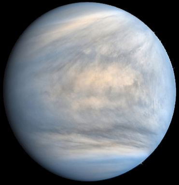

Меркурий
Описание
- Мерку́рий — ближайшая к Солнцу планета Солнечной системы, наименьшая из планет земной группы.
- Названа в честь древнеримского бога торговли — быстрого Меркурия, поскольку она движется по небу быстрее других планет.
- Её период обращения вокруг Солнца составляет всего 87,97 дней — самый короткий среди всех планет Солнечной системы.
- Видимое расстояние Меркурия от Солнца, если смотреть с Земли, никогда не превышает 28°.
- Эта близость к Солнцу означает, что планету можно увидеть только в течение небольшого времени после захода или до восхода солнца, обычно в сумерках.
Назад
